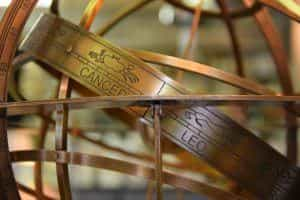
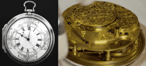

Quintus can be found at qcurtius.com. He is the author of the books On Duties, Thirty Seven, Sallust: The Conspiracy Of Catiline And The War Of Jugurtha, and other books. His work has been reviewed at Taki's Magazine. He can be followed on Twitter


In our modern era we take for granted the ease of international travel. We give hardly a thought to the difficulties that our ancestors faced when trying to move from one part of the globe to another. But make no mistake: those difficulties were very real and acted as barriers to movement. We will consider one of the most famous of these navigational problems, the measurement of longitude.
Anyone looking at a model globe today will see it crisscrossed with encircling lines. These are the lines of latitude and longitude. We early on learn the difference between the two: lines of latitude are the parallel lines that circle the globe from pole to pole like rings stacked one upon the other. Lines of latitude are very old; Ptolemy first described them in detail in the second century A.D., and he himself was relying on earlier geographers. Latitude is (relatively) easy for a mariner to determine; instruments like the quadrant and sextant have existed since medieval times, and they operated by measuring angles from the horizon to various celestial objects.

Longitude is fundamentally different from latitude. Lines of longitude circle the globe in the opposite direction as latitude, so that when the two lines intersect, they do so at right angles. Longitude is connected to time. Longitude meridians can shift. For a sailor to know his longitude measurement at sea, he must know his own shipboard time, as well as the precise simultaneous time at another place on the globe. Only by comparing these two times can he know where he is.
Why is this? Since the earth takes twenty-four hours to revolve on its axis, and each revolution is three hundred sixty degrees, we can say that each hour of time difference between the two places represents fifteen degrees of longitude. On degree of longitude represents four minutes, but the distance involved will vary from one point on the globe to another. (A complete explanation is lengthy and need not concern us here. Those interested can contact the writer).
So the key to unlocking longitude involves time measurements. What seems like no big problem today was in fact a major problem in past centuries. Clocks were large and unwieldy, most operating by pendulum. Even the ones that could be placed aboard an oceangoing ship would not be able to record time with enough precision to make them useful. One of the best-kept secrets of the Age of Exploration is that most of the great explorers were hopelessly lost most of the time. They had to rely on their instincts, dead reckoning, portents, and a “feel” for the locale; but these things could only take a mariner so far. And one could not prepare reliable charts using intuition.
And there the problem stood for many centuries. Astronomers proposed some cumbersome solutions, but these were of limited utility. Finally, in 1714, the British Parliament made a bold move: it passed the Longitude Act, an initiative designed to fire the imaginations of creative minds everywhere. It offered a huge cash reward to anyone who could devise a useful and practicable way of measuring longitude. Specifically, the Act offered the following: 20,000 pounds for a method to calculate longitude to an accuracy of half a degree; 15,000 pounds for a method producing an accuracy within two-thirds of a degree; and 10,000 pound for a measurement within an accuracy of one degree. (The ambitious reader can do his own calculations to see what these cash equivalents would be in 2016 British currency).

One solitary genius named John Harrison heard the call to action and set to work. He must rank as one of the strangest and impressive figures in British scientific history. Born in 1693, Harrison showed an early mechanical aptitude and excelled at woodworking and carpentry. For some reason–we do not know why–he became obsessed with clocks as a teenager, constructing his first pendulum models before the age of twenty. Perhaps it was because such contrivances offered a suitable challenge to his talents. His clocks were revolutionary in that they used new types of gears and wheels and could run without any lubrication by oil. This last point would prove to be essential for making accurate chronographs at sea.
By 1736, Harrison had produced the first prototype of what would be called “H-1.” It was an imposing machine that weighed seventy-five pounds and occupied a box four feet square. Trials of the instrument at sea showed that it kept meticulous time. Harrison refined his frictionless clock designs in the years ahead, producing models H-2 (1741), H-3 (1759) and the beautiful H-4 (1760). This last model was so light and portable that it could be carried by one man in the palm of his hand. Harrison was a perfectionist and a modest man; his lack of self-promotion meant that credit for his work was late in coming.
As often happens when brilliant “amateurs” dabble in fields dominated by “professionals,” professional jealousies began to surround Harrison. Many of the influential astronomers and mathematicians of the Royal Society (some of whom came from distinguished families) could not comprehend that a modest middle-class worker from Yorkshire could have produced such machines with no formal training, no experience, and no university degrees. It was beyond their comprehension. Harrison’s mere existence proved a threat to powerful interests.
Harrison’s H-3 sea chronometer (1759)
The scientific establishment did everything it could to prevent Harrison from claiming the prize that was rightfully his. The Rev. Nevil Maskelyne, the fifth astronomer royal, proved to be a particularly vindictive opponent. At Maskelyne’s behest, the Longitude Board (the panel overseeing the clock testing and awarding of the prize money) dragged its feet on recognizing Harrison’s accomplishments. Worse still, the Board changed the rules of the game whenever it felt like it. Harrison had made the establishment professionals look like fools and they were determined to punish him for it.
But truth cannot be suppressed for long. It will always find a way to reveal itself. Harrison’s sea-clocks proved their worth; Captain Cook himself carried one on his famous voyages. But after decades of delayed recognition, Harrison was finally granted an audience with King George III himself in Windsor Castle. (In this drama, even the partially insane have a role to play). Harrison (with his son) was finally able to explain to the king all the wrongs he had suffered at the hands of the bureaucrats and authorities. George III was said to have been outraged by Harrison’s shabby treatment, and was determined to resolve the matter. “By God, Harrison, I will see you righted!” he told Harrison’s son William.
In 1773, Harrison finally was able to claim the prize that was rightfully his. It was a supreme moment in the history of justice as well as of science.
Read More: 20 Things Deeply Wrong With Australia